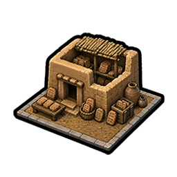
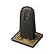
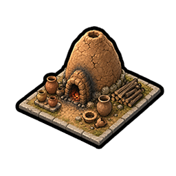
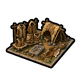
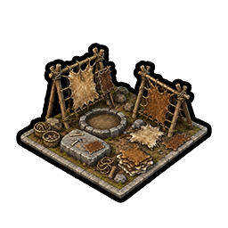
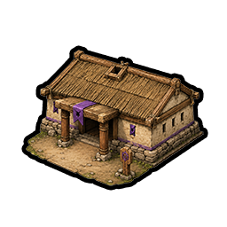
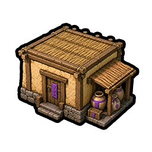

Buildings
10 new buildings across three districts — the early City Center economy, the Tier-0 Government Plaza, and a secret-society Industrial Zone building. (World wonders are on the Wonders page.)
City Center buildings
Early-economy buildings raised in the City Center — cooking and shelter, craft workshops, and the first record-keeping.
Hearth

Tablet House

Law Stele
Provides +1 Loyalty per turn in this city. If the city already has maximum Loyalty, also provides an additional +1 😊 Amenity.

Pottery Kiln

Furrier's Workshop
+1 😊 Amenity. Can only be built in a city adjacent to Tundra.

Tannery
Government Plaza buildings
Tier-0 Government Plaza buildings. Constructing one locks in a government's Legacy bonus.

Council House
Each 👤 Citizen in all cities exerts +0.5 Loyalty pressure.
Provides +1 😊 Amenity to all cities with maximum Loyalty.
Awards +1 Governor Title.

Tribute Warehouse
+1 TradeRoute Trade Route capacity.
+1 Influence Points per turn toward earning city-state 🤝 Envoys.
Awards +1 Governor Title.
Muster Square
Purchasing land military units costs 25% less 💰 Gold.
Levying units from city-states costs 25% less 💰 Gold.
Awards +1 Governor Title.
Industrial Zone buildings
Built in the Industrial Zone, unlocked through the Fire & Stone secret society.
Athanor
Unique to the Spirits of Fire and Stone, replaces the Workshop. Requires no 💰 Maintenance. Baetyl Craters in this city gain +1 ✨ Faith each. When completed, grants an Emberwright.